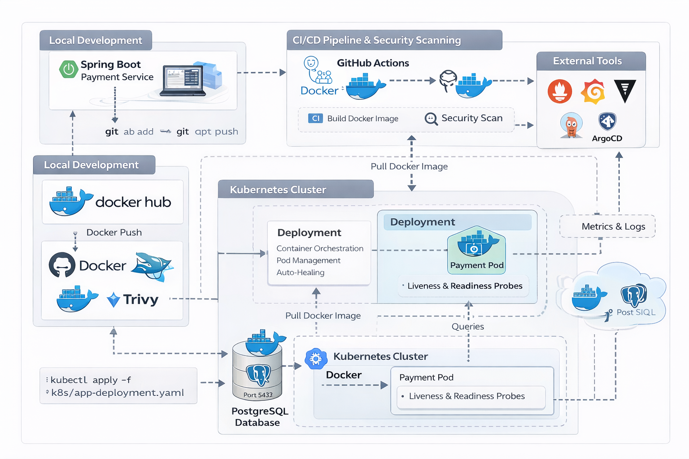
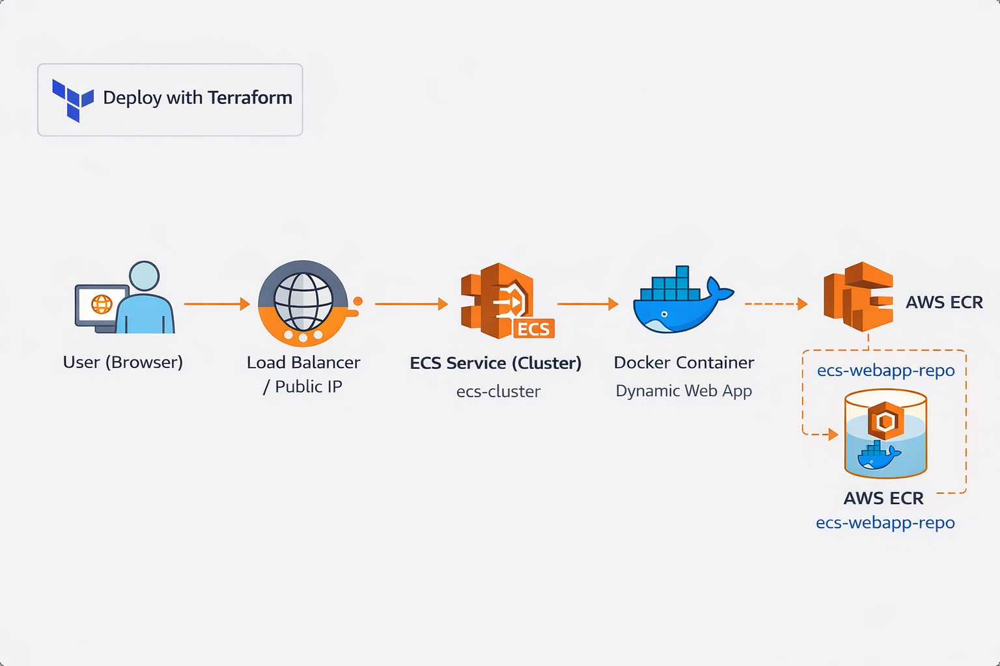
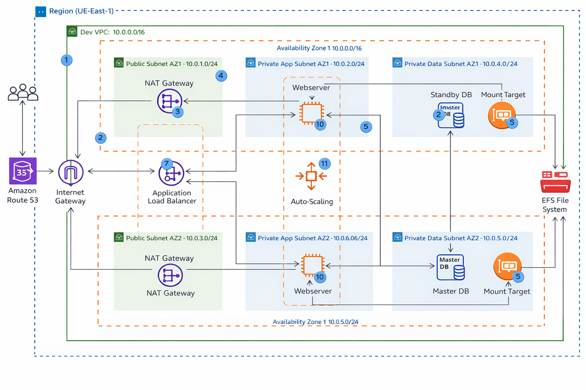
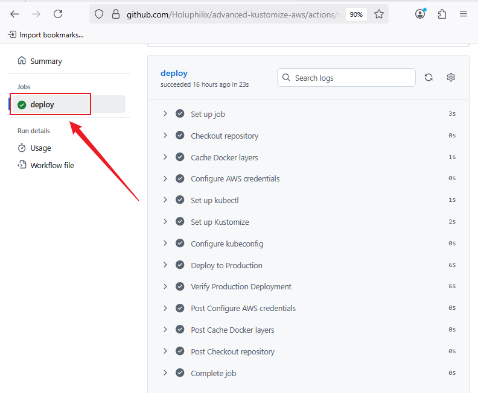
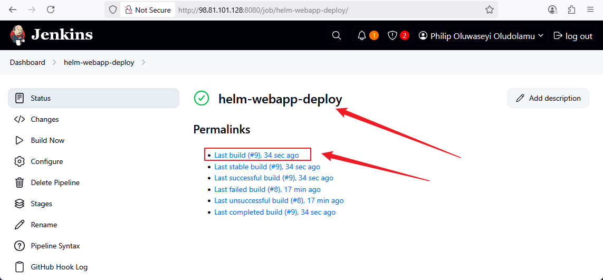
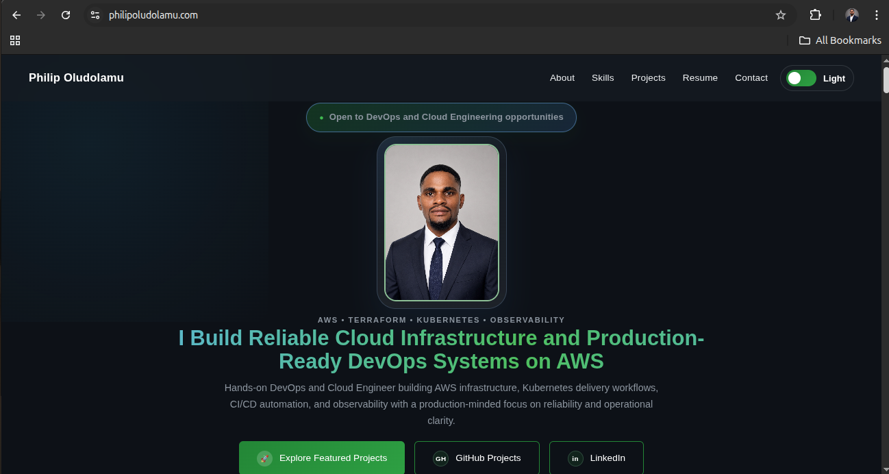
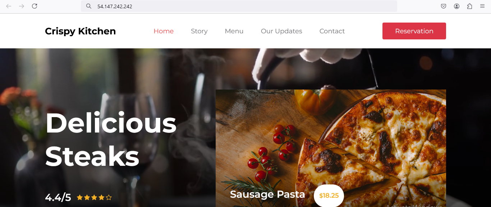
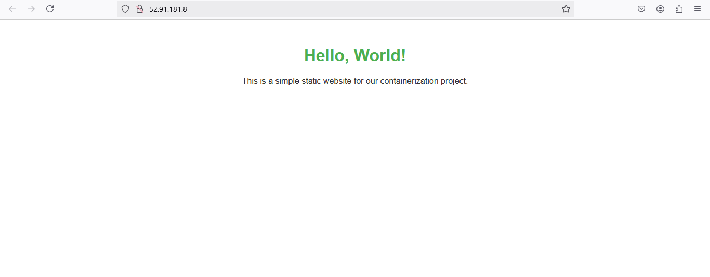

DevOps Engineer • AWS • Kubernetes • CI/CD
I design and automate cloud infrastructure using AWS, Kubernetes, and CI/CD pipelines. Helping teams deploy faster, scale reliably, and reduce downtime.
I am a DevOps Engineer focused on designing and deploying scalable, production-ready cloud systems. I specialize in AWS, Kubernetes, Terraform, and CI/CD automation, with hands-on experience building real-world infrastructure that is secure, reliable, and efficient.
My approach goes beyond basic deployments I build complete DevOps workflows that integrate infrastructure as code, automated pipelines, containerization, and security best practices. I am passionate about creating systems that are not only functional but also scalable and maintainable in real production environments.
Currently seeking opportunities where I can contribute to building high-performance cloud infrastructure and continue growing as a DevOps Engineer in a collaborative, impact-driven team.
Real-world DevOps projects focused on automation, scalability, and production-ready systems.

Designed a production-grade CI/CD pipeline for Kubernetes with automated builds, security scanning, and deployment workflows.

Built a fully automated container deployment pipeline using Terraform, Docker, Amazon ECR, and ECS Fargate for scalable cloud-native applications.

Architected a high-availability WordPress infrastructure with load balancing, auto-scaling, and secure networking using Terraform.

Implemented GitOps-style deployments using Kustomize overlays and GitHub Actions for automated multi-environment Kubernetes deployments.

Built a Jenkins-driven CI/CD pipeline deploying applications to EKS using Helm, with infrastructure provisioned via Terraform.


Deployed a production-style e-commerce application on AWS EC2 with Git-based workflows.
View Code
Built and deployed a containerized application to Kubernetes using Docker and Kind.
View CodeI build real-world DevOps systems, not just tutorials.
I create reproducible environments using Terraform and automation.
I integrate security directly into CI/CD pipelines.
I’m open to DevOps Engineer roles where I can design, automate, and scale cloud infrastructure.